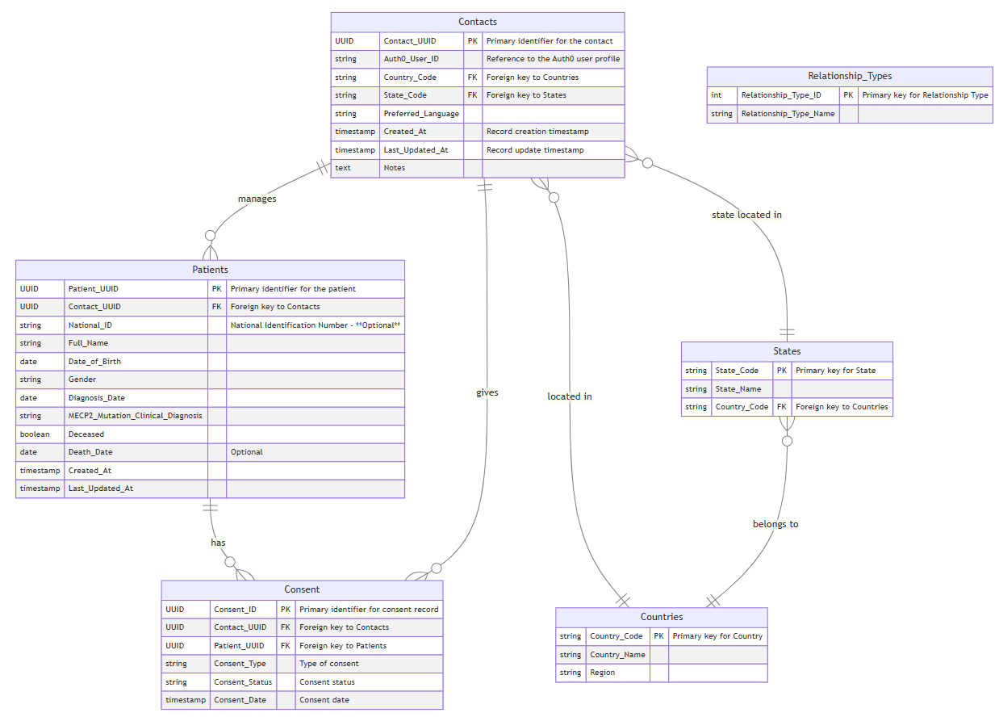

With Auth0 handling user profile information, we will use a simplified Contacts entity in the data model by removing some fields and leveraging Auth0 for authentication and basic profile management.

erDiagram
Contacts {
UUID Contact_UUID PK "Primary identifier for the contact"
string Auth0_User_ID "Reference to the Auth0 user profile"
string Country_Code FK "Foreign key to Countries"
string State_Code FK "Foreign key to States"
string Preferred_Language
timestamp Created_At "Record creation timestamp"
timestamp Last_Updated_At "Record update timestamp"
text Notes
}
Patients {
UUID Patient_UUID PK "Primary identifier for the patient"
UUID Contact_UUID FK "Foreign key to Contacts"
string National_ID "National Identification Number - **Optional**"
string Full_Name
date Date_of_Birth
string Gender
date Diagnosis_Date
string MECP2_Mutation_Clinical_Diagnosis
boolean Deceased
date Death_Date "Optional"
timestamp Created_At
timestamp Last_Updated_At
}
Consent {
UUID Consent_ID PK "Primary identifier for consent record"
UUID Contact_UUID FK "Foreign key to Contacts"
UUID Patient_UUID FK "Foreign key to Patients"
string Consent_Type "Type of consent"
string Consent_Status "Consent status"
timestamp Consent_Date "Consent date"
}
Countries {
string Country_Code PK "Primary key for Country"
string Country_Name
string Region
}
States {
string State_Code PK "Primary key for State"
string State_Name
string Country_Code FK "Foreign key to Countries"
}
Relationship_Types {
int Relationship_Type_ID PK "Primary key for Relationship Type"
string Relationship_Type_Name
}
Contacts ||--o{ Patients : "manages"
Contacts }o--|| Countries : "located in"
Contacts }o--|| States : "state located in"
Patients ||--o{ Consent : "has"
Contacts ||--o{ Consent : "gives"
States }o--|| Countries : "belongs to"